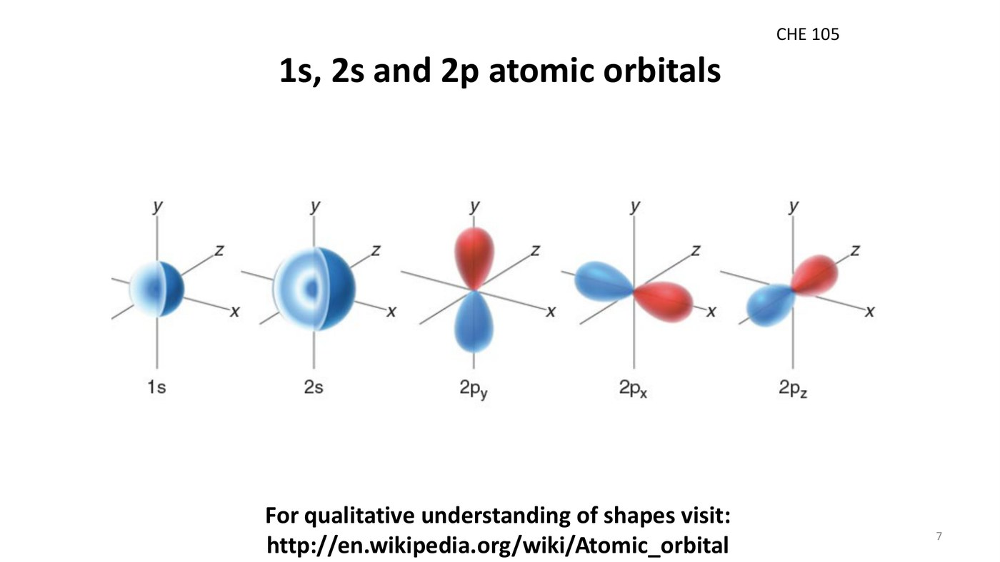
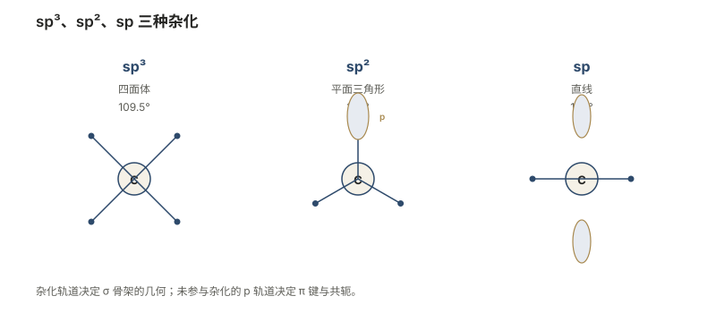

CHE105 · 第 4 章
分子结构：原子轨道、分子轨道与杂化
Structure of Molecules
虚线下划线为术语；悬停查看中文、英文与释义，完整词典见“术语”。
本章目录
为什么甲烷是四面体、乙烯是平面、乙炔是直线？答案不在"碳要画四根键"，而在轨道。本章从原子轨道出发，经分子轨道与杂化，把"形状"还原成"电子结构"。
本章要点
- 电子只能处于量子化的能级中，不能停在两级之间；电子在原子轨道（AO）中出现的概率由波函数描述。
- 一个 AO 最多容纳 2 个自旋相反的电子（Pauli）；等价轨道上电子优先单独占据（Hund）。
- Aufbau 原理：从最低可用轨道开始逐个填入电子。Cl 的构型为 1s²2s²2p⁶3s²3p⁵。
- 同周期元素尺寸相近（n 相同），同族元素性质相似（最外层电子数相同）。
- 原子轨道同相重叠（constructive）生成成键 MO，反相重叠（destructive）生成反键 MO。
- s–s、s–p 端对端重叠给 σ 键；p–p 端对端给 pσ，侧向给 pπ。
- 键级 =（成键电子数 − 反键电子数）/ 2；H₂ 为 1，He₂ 为 0，N₂ 为 3。
- 杂化是能量相近的原子轨道重新组合成等数量的等价新轨道；sp³ 四面体、sp² 平面、sp 直线。
4.1 原子结构：核与电子云
讲义从最朴素的问题开始："作为一个分子是什么感觉？原子之间靠什么连在一起？化学键到底是什么？分子为什么有特定的形状？"要回答这些，先把原子拆开看。
原子由带正电的质子、不带电的中子组成的原子核，以及由带负电的电子组成的电子云electron cloud构成。电子云不是一层壳，而是一团概率分布——电子并不沿固定轨道绕核运行，它出现的位置只能用概率描述。这就是波粒二象性wave-particle duality：电子同时表现粒子的性质（有确定质量、电荷、可被计数）与波的性质（可衍射、可干涉、有相位）。
波粒二象性不是哲学玄谈，它直接决定了后面所有的图像。因为电子是波，两个原子的电子波叠加时才有"同相"与"反相"之分；因为同相叠加会增强、反相叠加会抵消，才会出现成键轨道与反键轨道。整章的因果链从这里开始。
L4 p.2–3
4.2 量子化能级与原子轨道
第一个关键事实：电子只能存在于量子化的能级上。讲义的说法很形象——电子不能"爬半级台阶"，它只能从一级跳到另一级，中间的状态不存在。因此原子中电子的能量是分立的，不是连续的。
原子轨道atomic orbital（AO）是描述电子在核周围空间中出现概率的波函数wave function。它不是"电子运动的轨迹"，而是"电子可能在哪里的地图"。之所以只能用概率，是因为海森堡不确定原理Heisenberg uncertainty principle：位置与动量不能同时被精确确定。
往轨道里填电子要遵守两条规则。第一条是泡利不相容原理Pauli exclusion principle：一个 AO 最多容纳 2 个电子，且两者自旋方向必须相反。第二条是洪特规则Hund's rule：当有多个能量相同的轨道（简并轨道，degenerate AOs）可选时，电子优先单独占据不同的轨道，保持不成对。这两条规则加上后面的 Aufbau 原理，构成了写电子构型的全部工具。

L4 p.5–6
4.3 1s、2s、2p 与电子构型
有机化学只需要关心最内层的 1s 与第二层的 2s、2p。1s 与 2s 都是球形，2s 更大、能量更高；2p 有三个轨道，分别沿 x、y、z 轴呈哑铃形，各有一个节面穿过原子核。三个 2p 轨道能量相同，是简并的。
构造原理Aufbau principle描述的是"把原子一步步搭建起来"的过程：从能量最低的可用轨道开始，依次加入电子，每一步都遵守 Pauli 原理与 Hund 规则。用氯（Z = 17）验证：先填满 1s（2 个），再填 2s（2 个）、2p（6 个）、3s（2 个），最后 3p 填 5 个，得到 1s²2s²2p⁶3s²3p⁵。记住"每个 s 容 2 个、每个 p 容 6 个"这条容量规则，就不会数错。
碳的构型是 1s²2s²2p²，这个看似平淡的写法后面会反复出现：2s 与 2p 的能量接近，正是它们能够混合、发生杂化的前提。如果 2s 与 2p 的能量差得远，杂化就不可能发生，甲烷的四面体也就无从解释。
L4 p.7–8、p.10
4.4 周期表的两条规律
讲义用两个"为什么"把原子结构连接到周期表。第一问：同一周期（row）的元素尺寸相近，为什么？因为它们的电子填在同一层，主量子数 n 相同，拥有的原子轨道数目相同。第二问：同一族（column）的元素电子性质与化学性质相似，为什么？因为它们最外层轨道上的电子数相同。
这两个答案解释了很多现象。碳与硅同属第 14 族，最外层都是 4 个电子，所以都能形成四根键——这是它们相似的一面。但它们的 n 不同（碳是 2，硅是 3），原子尺寸与轨道重叠方式不同，所以键能、反应性差别很大——这是它们不相似的一面。上一章讲"碳不是小号的硅"，根子就在这里。
L4 p.9
4.5 能级图：从氢到碳
把轨道按能量高低画成横线，把电子画成箭头（↑ 表示自旋向上，↓ 表示自旋向下），就得到能级图energy level diagram。它是本章最常用的工具，因为能源清楚地显示"哪些轨道满了、哪些还有空位"。
氢（Z = 1）只有一个电子，填在 1s。氦（Z = 2）两个电子都在 1s，自旋相反，1s 填满。铍（Z = 4）是 1s²2s²，2s 填满。碳（Z = 6）是 1s²2s²2p²，两个 2p 电子按 Hund 规则分占两个不同的 p 轨道，自旋平行——这一点很关键，因为"两个未成对电子"正是碳能形成四根键的结构基础之一。
画能级图时有两个常见错误：把 2p 的三个轨道画成不同高度（它们是简并的，应画在同一水平线上）；在 2p 上先成对再单占（违反 Hund 规则，应先各占一个）。
L4 p.10
4.6 分子轨道：成键与反键
当两个原子的原子轨道组合时，形成属于两个原子共有的分子轨道molecular orbital（MO）。一个 MO 同样最多容纳 2 个电子。电子带负电，会对两个原子核同时产生吸引力，这股吸引力就是把两个核"粘"在一起的力——这就是化学键。
组合的方式有两种。两个波函数同相叠加（constructive overlap），波峰对波峰，电子云在两核之间增强，形成的轨道能量低于原来的 AO，叫成键轨道bonding orbital。两个波函数反相叠加（destructive overlap），波峰对波谷，两核之间出现节面、电子云被排空，形成的轨道能量高于原来的 AO，叫反键轨道antibonding orbital，通常记作 σ*。
能量账要算清楚：组合前的两个 AO 能量之和，等于组合后的成键轨道与反键轨道能量之和——一个降、一个升，升降幅度相同。所以"形成 MO"本身不省能量，省能量的是把电子填进成键轨道。这解释了为什么 He₂ 不存在：它的成键与反键轨道各填 2 个电子，能量一升一降正好抵消，净收益为零。

Clean vector orbital interaction diagram in two panels: left panel shows two s orbitals overlapping in phase with enhanced electron density between the nuclei, an arrow down to a lower-energy sigma bonding orbital; right panel shows the same two s orbitals overlapping out of phase with a node between the nuclei, an arrow up to a higher-energy sigma antibonding orbital marked with an asterisk. Energy axis on the left with an upward arrow. Flat 2D, thin 1.5 px strokes, muted slate blue and warm grey palette, white background, English labels, no cartoon, no gradient, no shadow.
L4 p.12–18
4.7 σ 键与键级
s 轨道是球形，两个 s 轨道无论从哪个方向靠近都是"端对端"重叠，因此 s–s 组合只给出 σ 成键与 σ* 反键。s 与 p 组合时，p 轨道沿键轴的一端与 s 重叠，也给 σ 键。p 与 p 组合有两种可能：端对端（end-on）重叠给 pσ 键pσ bond，侧向（side-on）重叠给 pπ 键pπ bond。讲义用一张表总结：s–s → σ；p–p → pσ 或 pπ；s–p → σ。
判断一个组合是否成键，标准是"重叠是否有效"。同相且重叠区域在两核之间，成键；反相，反键；两个轨道取向不匹配（例如一个 p 轨道的腰部对着另一个的腰部），重叠为零，既不成就也不成反，属于无效组合。
键级bond order把"成键电子多于反键电子"这件事量化：键级 =（成键电子数 − 反键电子数）/ 2。氢分子 H₂ 有 2 个电子全在 σ 成键轨道，键级 = (2 − 0)/2 = 1，单键。氦分子 He₂ 有 4 个电子，σ 与 σ* 各填 2 个，键级 = (2 − 2)/2 = 0，所以 He₂ 不存在。氮分子 N₂ 的键级为 3，对应一个三键——这也是氮气化学惰性的原因：要打断它得付出很高的代价。
L4 p.19–27
4.8 不同原子之间的组合
以上讨论的都是同种原子。当两个不同的原子成键时，还有三个因素要考虑。
第一是电负性electronegativity。电负性是原子吸引电子的量度。两个原子的电负性差得越大，形成的 MO 越"偏心"——成键轨道更靠近电负性大的原子，电子密度也更多落在那里，键因此带有极性。第二是尺寸：两个原子的轨道大小要相近，重叠才有效；一个很小的 2p 与一个很大的 3p 重叠，效果差。第三是取向：轨道必须指向彼此，才能形成有效的重叠。
这三条合起来解释了为什么"随便两个原子靠近"并不足以成键。尺寸与取向决定重叠的几何效率，电负性决定电子云最终偏向哪一边，而能量匹配决定组合后能降多少。第五章讲 HOMO–LUMO 时，会用同一套语言解释反应性。

L4 p.28–33
4.9 杂化：sp³ 与甲烷
碳的基态是 1s²2s²2p²：两个电子在 2s，两个在 2p，只有两个未成对电子。如果照这个状态成键，碳只能形成两根键，而且两根键的长度、能量还不一样（一根来自 2s，一根来自 2p）。但实验事实是：甲烷有四根完全等同的 C–H 键，键角 109.5°，分子呈正四面体。
解释这个矛盾的办法是杂化hybridization。定义是：两个或多个原子轨道组合，形成相同数目的新轨道，每个新轨道形状相同、能量相同。碳先把一个 2s 电子激发到空的 2p，得到 4 个未成对电子（1 个在 s、3 个在 p），然后这 4 个轨道混合成 4 个等价的 sp³ 杂化轨道sp³ hybrid orbital。四个 sp³ 轨道在空间上尽可能远离，指向正四面体的四个顶点，夹角 109.5°，每个与一个氢的 1s 重叠，形成四根等长的 σ 键。
这套模型是 Linus Pauling 提出的，他因研究化学键的本质获 1954 年诺贝尔化学奖。使用时要注意一句话：杂化是模型，不是物理过程。碳并不会真的"先激发再混合"，这只是让轨道图像与实验几何对得上的一种数学处理。


绘图提示词
Clean vector three-panel diagram of carbon hybridization: left panel sp3 showing one s and three p orbitals combining into four equivalent hybrid orbitals pointing to the corners of a tetrahedron with 109.5 degree angle; middle panel sp2 showing three hybrid orbitals in a plane at 120 degrees plus one unhybridized p orbital perpendicular to the plane; right panel sp showing two hybrid orbitals at 180 degrees plus two unhybridized p orbitals perpendicular to each other. Each panel labeled with the molecule methane, ethene, ethyne. Flat 2D, thin 1.5 px strokes, muted slate blue and warm grey palette, white background, English labels, no cartoon, no gradient, no shadow.
L4 p.34–35
4.10 sp² 与 sp：双键和三键
乙烯（ethene）的每个碳只与三个原子相连，需要三个等价轨道。碳把 2s 与两个 2p 混合，得到 3 个 sp² 杂化轨道，剩下1 个 p 轨道未参与杂化。三个 sp² 轨道在同一平面内，互成 120°，形成三根 σ 键（两根 C–H、一根 C–C）；剩下那个垂直于平面的 p 轨道，与另一个碳上同样垂直于平面的 p 轨道侧向重叠，形成 π 键。σ 骨架是平面的，π 键在平面的上下两侧——这就是"乙烯是平面分子"的轨道解释。
乙炔（ethyne）的每个碳只与两个原子相连。2s 与一个 2p 混合，得到 2 个 sp 杂化轨道，剩下2 个 p 轨道未参与杂化。两个 sp 轨道成 180°，形成直线形的 σ 骨架（C–H 与 C–C）；两个未杂化的 p 轨道分别从两个垂直方向侧向重叠，形成两个互相垂直的 π 键。所以三键 = 1 个 σ + 2 个 π，分子是直线形的。
同样的逻辑适用于 C=O。甲醛（H2C=O）中碳与氧都是 sp² 杂化：碳用三个 sp² 轨道分别连两个 H 与一个 O，氧用三个 sp² 轨道连碳并容纳两对孤对电子；剩下的 p 轨道侧向重叠形成 π 键。这一条在第六章解释羰基反应性时会直接用到——羰基的 π 键（π* 反键轨道）就是亲核试剂进攻的目标。

L4 p.36–39
4.11 形状、键角与孤对电子
把前面所有内容收成一条规则：原子周围的"基团"数目决定它的几何构型，而最稳定的排列是让这些基团彼此尽可能远离。这里的"基团"既可以是原子，也可以是一对孤对电子lone pair。
| 基团数 | 几何构型 | 键角 | 示例 |
|---|---|---|---|
| 4 | 四面体（tetrahedral） | 109.5° | 甲烷 CH4 |
| 3 | 平面三角（trigonal planar） | 120° | 乙烯的每个碳、甲醛的碳 |
| 2 | 直线（linear） | 180° | 乙炔的每个碳 |
这张表与杂化方式一一对应：sp³ ↔ 4 个基团 ↔ 109.5°；sp² ↔ 3 个基团 ↔ 120°；sp ↔ 2 个基团 ↔ 180°。之所以"基团数"能直接推出几何，是因为基团间的排斥把杂化轨道推开到最大夹角——四面体、平面三角、直线，正是 4、3、2 个点在球面上最均匀的分布。
孤对电子为什么重要？因为孤对电子占据的空间比成键电子对更大、排斥更强，会把相邻的键角压小。讲义只要求记住"基团可以是原子或孤对电子"，但这条在后面判断胺、醇、水的形状时会反复出现。
Clean vector three-panel geometry diagram: tetrahedral carbon with four bonds at 109.5 degrees shown with a dashed tetrahedron guide, trigonal planar carbon with three bonds at 120 degrees shown in a flat plane, and linear carbon with two bonds at 180 degrees. Each panel labeled with the group count 4, 3, 2 and the geometry name. Flat 2D, thin 1.5 px strokes, muted slate blue and warm grey palette, white background, English labels, no cartoon, no gradient, no shadow.
L4 p.41–42